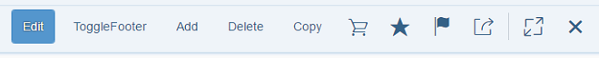
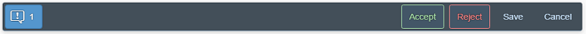
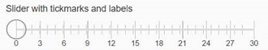
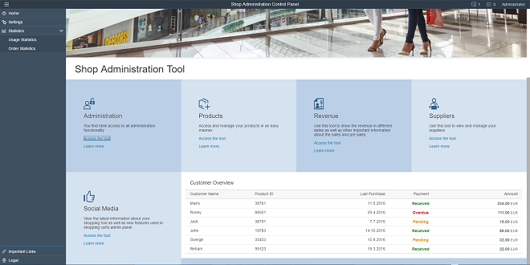

What's New in OpenUI5 1.46
With this release, OpenUI5 is upgraded from version 1.44 to 1.46.
New Controls
-
sap.f.Avatar is an SAP Fiori 2.0 image-like control that has different display options for representing images, initials, and icons. It allows the usage of different content, shapes, and sizes depending on the use case.

There are several predefined sizes, as well as an option to set a custom size.

For more information, see the API Reference and the sample.
-
sap.f.FlexibleColumnLayout: This control represents the new SAP Fiori 2.0 base layout for an app. It implements the master-detail-detail paradigm by displaying up to three pages in separate columns. The columns are referred to as Begin, Mid, and End, and their width is variable depending on the current layout.
There are several possible layouts that can be changed with the control's API, and also by the user with navigation arrows.

For more information, see Building an App with the Flexible Column Layout and Related Classes, the API Reference, and the sample.
-
sap.f.semantic.SemanticPage: This new SAP Fiori 2.0 control represents an enhanced sap.f.DynamicPage that contains controls with semantic-specific meaning. You can set different actions using the available aggregations, and the sap.f.semantic.SemanticPage will automatically position them in dedicated sections of the title or the footer of the page, facilitating the implementation of the SAP Fiori 2.0 design guidelines.
Different types of actions in the title positioned in a predefined orderDifferent types of actions in the footer’s right and left areas, positioned in a predefined orderFor more information, see the API Reference and the sample.
-
sap.ui.codeeditor.CodeEditor: You can use this control to visualize source code of various types, with syntax highlighting and line numbers, in edit and read-only mode, for example, in scenarios where you want the user to inspect and edit source code. The CodeEditor is a wrapper control for the open-source Ace code editor (see https://ace.c9.io
 ). For
more information, see the API Reference and the sample.
). For
more information, see the API Reference and the sample.
Improved Controls
-
sap.m.ComboBox:
-
The value state error message is now visible above all list items in the dropdown list of the sap.m.ComboBox. This improves the usability on mobile devices (tablets and phones).
-
When the ComboBox displays two columns (for example, key and value), you can search and filter for matching strings in both columns. This is enabled with the filterSecondaryValues property. For more information, see the API Reference and the sample.
-
-
sap.m.DatePicker: We have introduced a new navigate event. While navigating in the calendar popup of the sap.m.DatePicker, you can now receive an event containing the first and the last dates that are currently visible. You can use this information for lazy loading of special dates. For more information, see the API Reference.
-
sap.m.GenericTile: The new Actions scope property was added to provide an editing option for the GenericTile control when included on a Web page, for example, on the SAP Fiori launchpad. It is aligned explicitly with the interaction design of the SAP Fiori launchpad’s Edit mode. Both the sap.m.GenericTile and sap.m.SlideTile controls have been extended with this feature. You use the new scope property to switch the visual representation of the GenericTile or SlideTile on a Web page from the Display scope to the Actions scope. For more information, see the API Reference and the sample.
-
sap.m.Input and all inheriting controls now allow filtering and searching in two or more columns. Matching is done only on the initial character and the matching sequence is displayed in bold in the suggestion list.

For more information, see the sample.
-
sap.m.MessageBox can now hold and display formatted text (sap.m.FormattedText) and JSON content. This allows you to display message boxes with complex content. For more information, see the sample.
-
sap.m.MultiComboBox: The delay for text validation in the sap.m.MultiComboBox has been changed in order to react correctly to special inputs in non-Latin languages (for example, Chinese).
-
sap.m.MultiInput has been refactored to improve performance and accessibility. The tokenChange() event is deprecated and replaced with the new tokenUpdate(). For more information, see the API Reference.
-
sap.m.NotificationListItem and sap.m.NotificationListGroup: We have implemented several new features:
-
When the maximum number of notifications is reached, a message is shown on the bottom of the NotificationListGroup notifying the user about additional notifications that are hidden.

-
Action buttons have been moved from the footer of the NotificationListItem to the header to improve usability.

-
-
sap.m.PlanningCalendar: We have introduced a new rowHeaderClick event. You can now receive an event when a row header of the sap.m.PlanningCalendar is clicked. For more information, see the API Reference.
-
sap.m.QuickView and sap.m.QuickViewCard have a new parameter called navOrigin that improves the navigation when you use data binding. The new parameter is set in the navigate and afterNavigate events and holds a link to the originating card. For more information, see the API Reference.
-
sap.m.Slider and sap.m.RangeSlider can display labels for tick marks. The labels are defined and represented as a sap.m.ResponsiveScale, which is logically decoupled from the slider. For more information, see the API Reference and the sample.
 -
sap.m.Table: Screen reader support for sap.m.Table has been improved. For more information, see the API Reference.
-
sap.m.UploadCollection: To add an item to the upload list, you can also use drag & drop on your desktop or tablet. This feature is available in both the Instant Upload and Upload Pending scenarios. For more information, see the API Reference and the sample.
-
sap.ui.layout.form.Form: The samples in the Demo Kit have been improved.
-
sap.ui.table.*:
-
Keyboard navigation has been enhanced for Edit mode.
-
You can now define row-specific actions, such as navigation. The actions remain available on the right even when you scroll horizontally.
-
Demo Kit and Documentation Changes
You can now switch the Samples to the new High Contrast White theme from the Settings menu.
We reworked the landing page for the Demo Apps in the Demo Kit. It now features and highlights demo apps in multiple categories, and tests and related documentation chapters are now linked. Check it out at Demo Apps.
-
Browse Orders: A new master-detail app with features for browsing orders

-
Shop Administrator : The tool page demo app has been completely renovated and now showcases a shop administration scenario with controls from the sap.tnt, sap.ui.layout, and sap.suite.ui library.
